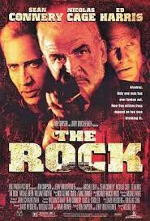
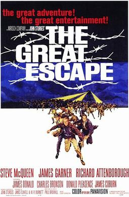

The film tells the story of banker, who is sentenced to life in Shawshank State Penitentiary for the murders of his wife and her lover, despite his claims of innocence. Over the following two decades, he befriends a fellow prisoner, and becomes instrumental in a money laundering operation led by the prison warden

A mild-mannered chemist and an ex-con must lead the counterstrike when a rogue group of military men, led by a renegade general, threaten a nerve gas attack from Alcatraz against San Francisco.
The film tells a fictionalized story about a group of Allied POWs who have repeatedly escaped from camps across the Third Reich, and are now moved to a new camp especially designed for them.
